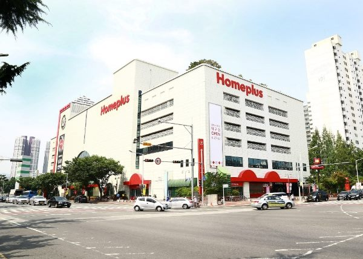

법원, 홈플러스 회생 절차 재개… ‘폐지 결정’ 취소
대형마트 홈플러스의 기업회생 절차가 다시 이어지게 됐다. 법원이 앞서 내렸던 회생절차 폐지 결정을 취소하고 절차를 재개한다고 밝혔다. 협력업체와 임직원의 불확실성이 일부 걷힐지 주목된다.
유종한 기자 · 2026.07.24
橋한국

법원이 홈플러스의 회생 절차를 재개하기로 하고 기존 폐지 결정을 취소했다고 조선일보가 전했다. 회생 절차 중단으로 커졌던 청산 우려에 제동이 걸린 셈이다.
광고 문의 · 300×250기업회생은 빚이 많아 정상 영업이 어려운 기업이 법원 관리 아래 채무를 조정하며 재기를 꾀하는 제도다. 절차가 폐지되면 통상 청산 수순으로 이어지지만, 재개되면 사업을 이어가며 회생 계획을 다시 다듬을 여지가 생긴다.
홈플러스는 전국에 다수 점포와 협력업체를 두고 있어, 절차의 향방은 납품 중소업체와 입점 상인, 직원 고용에 직접 영향을 미친다. 이번 취소로 당장의 청산 불안은 줄었지만, 근본적 재무구조 개선과 매각·투자 유치라는 과제는 그대로 남아 있다.
유통업계는 온라인 전환과 소비 위축 속에서 대형마트가 겪는 구조적 어려움의 한 단면으로 이번 사안을 본다. 점포 효율화와 신사업 전환이 회생의 관건이 될 전망이다.
華橋時報는 한 기업의 존폐가 수많은 협력업체와 노동자의 생계로 이어진다는 점에 주목한다. 재한 화인 자영업자 가운데도 대형 유통망과 거래하는 이들이 있어, 절차의 안정적 진행이 지역 경제의 예측 가능성을 높인다.
출처·참고 (사실 확인용 — 본문은 직접 재작성)
· 조선일보
· 조선일보